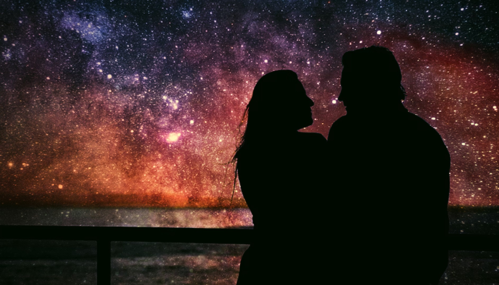

Do You Believe in Soulmates?
🎵 "sad background music" — u_mjrer7ibke (Pixabay Music)
What if some souls recognize each other long before words are spoken?
Do You Believe in Soulmates? explores the mystery of profound human connections—those rare encounters that feel guided by destiny rather than chance. Inspired by the idea of soul recognition and karmic bonds, this poem reflects on how two strangers can leave an everlasting imprint on each other's hearts, even if they are not meant to remain together.
Blending imagery from science and nature with themes of love, memory, and transformation, the poem invites readers to reflect on whether certain relationships enter our lives not to last forever, but to awaken something within us that changes us forever.
Whether you believe in soulmates, destiny, or simply the extraordinary power of human connection, this poem is an invitation to ponder the invisible threads that bind hearts across time and distance.
